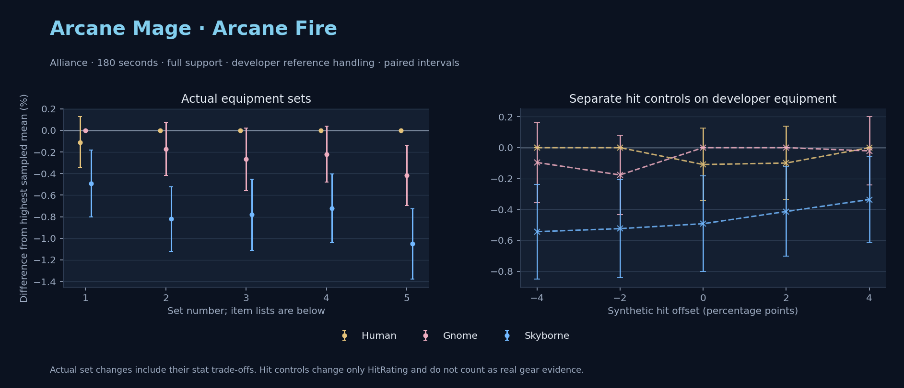

Alliance · Human / Gnome / Skyborne

No pet or guardian appears in the reference combat metrics. Reference: Human, developer equipment, 180 seconds and full support. Pet choices remain those of the developer build.
WoWSims developer · P1 Arcane
Unimplemented enchant or active set effects: [{"id": 181, "pieces": 2, "effects": ["+8 All Resistances."]}, {"id": 181, "pieces": 4, "effects": ["When struck in combat has a 2% chance of freezing the attacker in place for 3s. Can only occur once every 60 sec."]}]
180 seconds, full support and original developer references. Hit below is generic sheet melee / spell hit; school and talent bonuses can be attached directly to spells.
| Race | DPS | Gap and interval | Generic hit | Replay |
|---|---|---|---|---|
| Gnome | 782.99 | +0.000% ± 0.000 | 2.9% / 2.9% | Native input · Website JSON |
| Human | 782.14 | -0.109% ± 0.236 | 2.9% / 2.9% | Native input · Website JSON |
| Skyborne | 779.14 | -0.493% ± 0.310 | 2.9% / 2.9% | Native input · Website JSON |
| Slot | Item | ID | Enchant |
|---|---|---|---|
| Head | Magister's Crown | 16686 | |
| Neck | Gem of Trapped Innocents | 23057 | |
| Shoulder | Sorcerer's Mantle | 226936 | |
| Back | Drape of Vaulted Secrets | 21415 | |
| Chest | Magister's Robes | 16688 | |
| Wrist | Magister's Bindings | 16683 | |
| Hands | Magister's Gloves | 16684 | |
| Waist | Magister's Belt | 16685 | |
| Legs | Magister's Leggings | 16687 | |
| Feet | Magister's Boots | 16682 | |
| Ring 1 | Brilliant Watcher's Signet | 275982 | |
| Ring 2 | Ring of Entropy | 18543 | |
| Trinket 1 | Talisman of Ephemeral Power | 18820 | |
| Trinket 2 | Neltharion's Tear | 19379 | |
| Main hand | Grand Marshal's Mageblade | 23451 | |
| Off hand | Master Dragonslayer's Orb | 19366 | |
| Ranged / relic | Torch of Light | 279246 |
Community calculated list · Published pre-raid
Unimplemented enchant or active set effects: [{"id": 181, "pieces": 2, "effects": ["+8 All Resistances."]}]
180 seconds, full support and original developer references. Hit below is generic sheet melee / spell hit; school and talent bonuses can be attached directly to spells.
| Race | DPS | Gap and interval | Generic hit | Replay |
|---|---|---|---|---|
| Human | 806.84 | +0.000% ± 0.000 | 5.9% / 5.9% | Native input · Website JSON |
| Gnome | 805.45 | -0.172% ± 0.246 | 5.9% / 5.9% | Native input · Website JSON |
| Skyborne | 800.22 | -0.821% ± 0.299 | 5.9% / 5.9% | Native input · Website JSON |
| Slot | Item | ID | Enchant |
|---|---|---|---|
| Head | Sorcerer's Crown | 226935 | Arcanum of Focus |
| Neck | Archlight Talisman | 15856 | Enchant Necklace - Spell Power |
| Shoulder | Magister's Mantle | 16689 | |
| Back | Arcanoweave Cloak | 272411 | |
| Chest | Sorcerer's Robes | 226932 | Enchant Chest - Major Intellect |
| Wrist | Magister's Bindings | 16683 | Enchant Bracer - Greater Spellpower |
| Hands | Sorcerer's Gauntlets | 226930 | Enchant Gloves - Arcane Power |
| Waist | Belt of the Archmage | 18405 | |
| Legs | Magister's Leggings | 16687 | Arcanum of Focus |
| Feet | Sorcerer's Sandals | 226931 | Mystic Rugged Armor Kit |
| Ring 1 | Channeler's Ring | 272406 | |
| Ring 2 | Blessed Band of Light | 272407 | |
| Trinket 1 | Weakness Analyzer | 272438 | |
| Trinket 2 | Uther's Strength | 11302 | |
| Main hand | Sageblade | 22383 | |
| Off hand | Spirit of Aquementas | 11904 | Enchant Off-Hand - Superior Intellect |
| Ranged / relic | Nether Force Wand | 11263 |
Published one-slot hit alternative · Published pre-raid
One source-listed alternative; at least 80% of the source slot score retained. Reported hit selects the contrast; only native stats determine simulation outcomes. This is an experimental combination, not an endorsed best set.
Unimplemented enchant or active set effects: [{"id": 181, "pieces": 2, "effects": ["+8 All Resistances."]}]
180 seconds, full support and original developer references. Hit below is generic sheet melee / spell hit; school and talent bonuses can be attached directly to spells.
| Race | DPS | Gap and interval | Generic hit | Replay |
|---|---|---|---|---|
| Human | 791.93 | +0.000% ± 0.000 | 4.9% / 4.9% | Native input · Website JSON |
| Gnome | 789.81 | -0.267% ± 0.290 | 4.9% / 4.9% | Native input · Website JSON |
| Skyborne | 785.74 | -0.782% ± 0.328 | 4.9% / 4.9% | Native input · Website JSON |
| Slot | Item | ID | Enchant |
|---|---|---|---|
| Head | Sorcerer's Crown | 226935 | Arcanum of Focus |
| Neck | Archlight Talisman | 15856 | Enchant Necklace - Spell Power |
| Shoulder | Magister's Mantle | 16689 | |
| Back | Arcanoweave Cloak | 272411 | |
| Chest | Sorcerer's Robes | 226932 | Enchant Chest - Major Intellect |
| Wrist | Magister's Bindings | 16683 | Enchant Bracer - Greater Spellpower |
| Hands | Gloves of Spell Mastery | 14146 | Enchant Gloves - Arcane Power |
| Waist | Belt of the Archmage | 18405 | |
| Legs | Magister's Leggings | 16687 | Arcanum of Focus |
| Feet | Sorcerer's Sandals | 226931 | Mystic Rugged Armor Kit |
| Ring 1 | Channeler's Ring | 272406 | |
| Ring 2 | Blessed Band of Light | 272407 | |
| Trinket 1 | Weakness Analyzer | 272438 | |
| Trinket 2 | Uther's Strength | 11302 | |
| Main hand | Sageblade | 22383 | |
| Off hand | Spirit of Aquementas | 11904 | Enchant Off-Hand - Superior Intellect |
| Ranged / relic | Nether Force Wand | 11263 |
Published ranked alternatives · Published pre-raid
Recorded source replacements: [{"slot": "shoulder", "from": 227808, "to": 19050, "publishedAlternativeRank": 1, "publishedEpDelta": -11.9, "reason": "First published alternative compatible with the current WoWSims database, class, faction and occupied slots."}, {"slot": "waist", "from": 228190, "to": 18405, "publishedAlternativeRank": 1, "publishedEpDelta": -15.3, "reason": "First published alternative compatible with the current WoWSims database, class, faction and occupied slots."}]
Unimplemented enchant or active set effects: [{"id": 181, "pieces": 2, "effects": ["+8 All Resistances."]}]
180 seconds, full support and original developer references. Hit below is generic sheet melee / spell hit; school and talent bonuses can be attached directly to spells.
| Race | DPS | Gap and interval | Generic hit | Replay |
|---|---|---|---|---|
| Human | 809.71 | +0.000% ± 0.000 | 6.8% / 6.8% | Native input · Website JSON |
| Gnome | 807.93 | -0.220% ± 0.261 | 6.8% / 6.8% | Native input · Website JSON |
| Skyborne | 803.86 | -0.722% ± 0.320 | 6.8% / 6.8% | Native input · Website JSON |
| Slot | Item | ID | Enchant |
|---|---|---|---|
| Head | Sorcerer's Crown | 226935 | Arcanum of Focus |
| Neck | Archlight Talisman | 15856 | Enchant Necklace - Spell Power |
| Shoulder | Mantle of the Timbermaw | 19050 | |
| Back | Arcanoweave Cloak | 272411 | |
| Chest | Robe of the Archmage | 14152 | Enchant Chest - Major Intellect |
| Wrist | Magister's Bindings | 16683 | Enchant Bracer - Greater Spellpower |
| Hands | Sorcerer's Gauntlets | 226930 | Enchant Gloves - Arcane Power |
| Waist | Belt of the Archmage | 18405 | |
| Legs | Magister's Leggings | 16687 | Arcanum of Focus |
| Feet | Magister's Boots | 16682 | Mystic Rugged Armor Kit |
| Ring 1 | Channeler's Ring | 272406 | |
| Ring 2 | Blessed Band of Light | 272407 | |
| Trinket 1 | Weakness Analyzer | 272438 | |
| Trinket 2 | Frozen Heart of the Mountain | 249469 | |
| Main hand | Sageblade | 22383 | |
| Off hand | Spirit of Aquementas | 11904 | Enchant Off-Hand - Superior Intellect |
| Ranged / relic | Brilliant Wand | 249385 |
Published one-slot hit alternative · Published pre-raid
One source-listed alternative; at least 80% of the source slot score retained. Reported hit selects the contrast; only native stats determine simulation outcomes. This is an experimental combination, not an endorsed best set.
Recorded source replacements: [{"slot": "shoulder", "from": 227808, "to": 19050, "publishedAlternativeRank": 1, "publishedEpDelta": -11.9, "reason": "First published alternative compatible with the current WoWSims database, class, faction and occupied slots."}, {"slot": "waist", "from": 228190, "to": 18405, "publishedAlternativeRank": 1, "publishedEpDelta": -15.3, "reason": "First published alternative compatible with the current WoWSims database, class, faction and occupied slots."}]
Unimplemented enchant or active set effects: [{"id": 181, "pieces": 2, "effects": ["+8 All Resistances."]}]
180 seconds, full support and original developer references. Hit below is generic sheet melee / spell hit; school and talent bonuses can be attached directly to spells.
| Race | DPS | Gap and interval | Generic hit | Replay |
|---|---|---|---|---|
| Human | 805.72 | +0.000% ± 0.000 | 5.8% / 5.8% | Native input · Website JSON |
| Gnome | 802.37 | -0.416% ± 0.280 | 5.8% / 5.8% | Native input · Website JSON |
| Skyborne | 797.25 | -1.052% ± 0.325 | 5.8% / 5.8% | Native input · Website JSON |
| Slot | Item | ID | Enchant |
|---|---|---|---|
| Head | Sorcerer's Crown | 226935 | Arcanum of Focus |
| Neck | Archlight Talisman | 15856 | Enchant Necklace - Spell Power |
| Shoulder | Mantle of the Timbermaw | 19050 | |
| Back | Arcanoweave Cloak | 272411 | |
| Chest | Robe of the Archmage | 14152 | Enchant Chest - Major Intellect |
| Wrist | Magister's Bindings | 16683 | Enchant Bracer - Greater Spellpower |
| Hands | Gloves of Spell Mastery | 14146 | Enchant Gloves - Arcane Power |
| Waist | Belt of the Archmage | 18405 | |
| Legs | Magister's Leggings | 16687 | Arcanum of Focus |
| Feet | Magister's Boots | 16682 | Mystic Rugged Armor Kit |
| Ring 1 | Channeler's Ring | 272406 | |
| Ring 2 | Blessed Band of Light | 272407 | |
| Trinket 1 | Weakness Analyzer | 272438 | |
| Trinket 2 | Frozen Heart of the Mountain | 249469 | |
| Main hand | Sageblade | 22383 | |
| Off hand | Spirit of Aquementas | 11904 | Enchant Off-Hand - Superior Intellect |
| Ranged / relic | Brilliant Wand | 249385 |
The same declared pool is available to every race. Each race keeps its best validation-sample set with its screening-selected racial policy. Separate samples confirm that choice, with fresh precision samples near the practical-loss boundary. Gaps use the highest sampled mean under that same duration, support and reference treatment as their reference. A zero reference gap does not certify a race; the main matrix also allows uncertainty in the leader.
| Pool | Seconds | Support | References | Race | DPS | Gap and interval | Racial policies / mana | Selected set | Generic hit: melee / spell | Replay |
|---|---|---|---|---|---|---|---|---|---|---|
| published-pre-raid | 60 | full | developer | Gnome | 942.60 | +0.000% ± 0.0005,000 iterations | developer / developer / developerMana waits 0.1s | published-mage-arcane-fire-alliance-fca2c8363dd40759 | 6.8% / 6.8% | Input · Result · Stats |
| published-pre-raid | 60 | full | developer | Skyborne | 935.60 | -0.742% ± 0.1445,000 iterations | developer / developer / developerMana waits 0.1s | published-mage-arcane-fire-alliance-fca2c8363dd40759 | 6.8% / 6.8% | Input · Result · Stats |
| published-pre-raid | 60 | full | developer | Human | 929.47 | -1.393% ± 0.0925,000 iterations | developer / developer / developerMana waits 0.1s | published-mage-arcane-fire-alliance-fca2c8363dd40759 | 6.8% / 6.8% | Input · Result · Stats |
| published-pre-raid | 60 | full | explicit | Gnome | 942.60 | +0.000% ± 0.0005,000 iterations | developer / developer / developerMana waits 0.1s | published-mage-arcane-fire-alliance-fca2c8363dd40759 | 6.8% / 6.8% | Input · Result · Stats |
| published-pre-raid | 60 | full | explicit | Skyborne | 935.60 | -0.742% ± 0.1445,000 iterations | developer / developer / developerMana waits 0.1s | published-mage-arcane-fire-alliance-fca2c8363dd40759 | 6.8% / 6.8% | Input · Result · Stats |
| published-pre-raid | 60 | full | explicit | Human | 929.47 | -1.393% ± 0.0925,000 iterations | developer / developer / developerMana waits 0.1s | published-mage-arcane-fire-alliance-fca2c8363dd40759 | 6.8% / 6.8% | Input · Result · Stats |
| published-pre-raid | 60 | self | developer | Gnome | 751.91 | +0.000% ± 0.0005,000 iterations | developer / developer / developerMana waits 0.5s | published-mage-arcane-fire-alliance-fca2c8363dd40759 | 6.8% / 6.8% | Input · Result · Stats |
| published-pre-raid | 60 | self | developer | Skyborne | 739.09 | -1.705% ± 0.1695,000 iterations | developer / developer / developerMana waits 0.7s | published-mage-arcane-fire-alliance-fca2c8363dd40759 | 6.8% / 6.8% | Input · Result · Stats |
| published-pre-raid | 60 | self | developer | Human | 736.83 | -2.006% ± 0.1315,000 iterations | developer / developer / developerMana waits 0.7s | published-mage-arcane-fire-alliance-fca2c8363dd40759 | 6.8% / 6.8% | Input · Result · Stats |
| published-pre-raid | 60 | self | explicit | Gnome | 751.91 | +0.000% ± 0.0005,000 iterations | developer / developer / developerMana waits 0.5s | published-mage-arcane-fire-alliance-fca2c8363dd40759 | 6.8% / 6.8% | Input · Result · Stats |
| published-pre-raid | 60 | self | explicit | Skyborne | 739.09 | -1.705% ± 0.1695,000 iterations | developer / developer / developerMana waits 0.7s | published-mage-arcane-fire-alliance-fca2c8363dd40759 | 6.8% / 6.8% | Input · Result · Stats |
| published-pre-raid | 60 | self | explicit | Human | 736.83 | -2.006% ± 0.1315,000 iterations | developer / developer / developerMana waits 0.7s | published-mage-arcane-fire-alliance-fca2c8363dd40759 | 6.8% / 6.8% | Input · Result · Stats |
| published-pre-raid | 180 | full | developer | Human | 807.30 | +0.000% ± 0.00020,000 iterations | developer / developer / developerMana waits 10.8s | published-mage-arcane-fire-alliance-fca2c8363dd40759 | 6.8% / 6.8% | Input · Result · Stats · Website JSON |
| published-pre-raid | 180 | full | developer | Gnome | 804.72 | -0.319% ± 0.06220,000 iterations | oncd / developer / developerMana waits 12.6s | published-mage-arcane-fire-alliance-fca2c8363dd40759 | 6.8% / 6.8% | Input · Result · Stats · Website JSON |
| published-pre-raid | 180 | full | developer | Skyborne | 800.08 | -0.894% ± 0.07220,000 iterations | developer / developer / developerMana waits 11.8s | published-mage-arcane-fire-alliance-fca2c8363dd40759 | 6.8% / 6.8% | Input · Result · Stats · Website JSON |
| published-pre-raid | 180 | full | explicit | Human | 807.30 | +0.000% ± 0.00020,000 iterations | developer / developer / developerMana waits 10.8s | published-mage-arcane-fire-alliance-fca2c8363dd40759 | 6.8% / 6.8% | Input · Result · Stats |
| published-pre-raid | 180 | full | explicit | Gnome | 804.72 | -0.319% ± 0.06220,000 iterations | oncd / developer / developerMana waits 12.6s | published-mage-arcane-fire-alliance-fca2c8363dd40759 | 6.8% / 6.8% | Input · Result · Stats |
| published-pre-raid | 180 | full | explicit | Skyborne | 800.08 | -0.894% ± 0.07220,000 iterations | developer / developer / developerMana waits 11.8s | published-mage-arcane-fire-alliance-fca2c8363dd40759 | 6.8% / 6.8% | Input · Result · Stats |
| published-pre-raid | 180 | self | developer | Human | 540.43 | +0.000% ± 0.0005,000 iterations | developer / developer / developerMana waits 63.0s | published-mage-arcane-fire-alliance-a2ceb1dcf7a1c89f | 5.9% / 5.9% | Input · Result · Stats |
| published-pre-raid | 180 | self | developer | Gnome | 537.44 | -0.552% ± 0.1895,000 iterations | developer / developer / developerMana waits 64.4s | published-mage-arcane-fire-alliance-a2ceb1dcf7a1c89f | 5.9% / 5.9% | Input · Result · Stats |
| published-pre-raid | 180 | self | developer | Skyborne | 534.64 | -1.071% ± 0.2115,000 iterations | developer / developer / developerMana waits 63.7s | published-mage-arcane-fire-alliance-a2ceb1dcf7a1c89f | 5.9% / 5.9% | Input · Result · Stats |
| published-pre-raid | 180 | self | explicit | Human | 540.43 | +0.000% ± 0.0005,000 iterations | developer / developer / developerMana waits 63.0s | published-mage-arcane-fire-alliance-a2ceb1dcf7a1c89f | 5.9% / 5.9% | Input · Result · Stats |
| published-pre-raid | 180 | self | explicit | Gnome | 537.44 | -0.552% ± 0.1895,000 iterations | developer / developer / developerMana waits 64.4s | published-mage-arcane-fire-alliance-a2ceb1dcf7a1c89f | 5.9% / 5.9% | Input · Result · Stats |
| published-pre-raid | 180 | self | explicit | Skyborne | 534.64 | -1.071% ± 0.2115,000 iterations | developer / developer / developerMana waits 63.7s | published-mage-arcane-fire-alliance-a2ceb1dcf7a1c89f | 5.9% / 5.9% | Input · Result · Stats |
| published-pre-raid | 300 | full | developer | Human | 738.91 | +0.000% ± 0.0005,000 iterations | developer / developer / developerMana waits 53.3s | published-mage-arcane-fire-alliance-a2ceb1dcf7a1c89f | 5.9% / 5.9% | Input · Result · Stats |
| published-pre-raid | 300 | full | developer | Gnome | 729.40 | -1.287% ± 0.1265,000 iterations | developer / developer / developerMana waits 60.1s | published-mage-arcane-fire-alliance-a2ceb1dcf7a1c89f | 5.9% / 5.9% | Input · Result · Stats |
| published-pre-raid | 300 | full | developer | Skyborne | 723.98 | -2.021% ± 0.1455,000 iterations | developer / developer / developerMana waits 58.8s | published-mage-arcane-fire-alliance-a2ceb1dcf7a1c89f | 5.9% / 5.9% | Input · Result · Stats |
| published-pre-raid | 300 | full | explicit | Human | 738.91 | +0.000% ± 0.0005,000 iterations | developer / developer / developerMana waits 53.3s | published-mage-arcane-fire-alliance-a2ceb1dcf7a1c89f | 5.9% / 5.9% | Input · Result · Stats |
| published-pre-raid | 300 | full | explicit | Gnome | 729.40 | -1.287% ± 0.1265,000 iterations | developer / developer / developerMana waits 60.1s | published-mage-arcane-fire-alliance-a2ceb1dcf7a1c89f | 5.9% / 5.9% | Input · Result · Stats |
| published-pre-raid | 300 | full | explicit | Skyborne | 723.98 | -2.021% ± 0.1455,000 iterations | developer / developer / developerMana waits 58.8s | published-mage-arcane-fire-alliance-a2ceb1dcf7a1c89f | 5.9% / 5.9% | Input · Result · Stats |
| published-pre-raid | 300 | self | developer | Human | 446.73 | +0.000% ± 0.0005,000 iterations | developer / developer / developerMana waits 159.5s | published-mage-arcane-fire-alliance-a2ceb1dcf7a1c89f | 5.9% / 5.9% | Input · Result · Stats |
| published-pre-raid | 300 | self | developer | Skyborne | 441.13 | -1.254% ± 0.1795,000 iterations | developer / developer / developerMana waits 158.9s | published-mage-arcane-fire-alliance-a2ceb1dcf7a1c89f | 5.9% / 5.9% | Input · Result · Stats |
| published-pre-raid | 300 | self | developer | Gnome | 439.49 | -1.620% ± 0.1605,000 iterations | developer / developer / developerMana waits 163.0s | published-mage-arcane-fire-alliance-a2ceb1dcf7a1c89f | 5.9% / 5.9% | Input · Result · Stats |
| published-pre-raid | 300 | self | explicit | Human | 446.73 | +0.000% ± 0.0005,000 iterations | developer / developer / developerMana waits 159.5s | published-mage-arcane-fire-alliance-a2ceb1dcf7a1c89f | 5.9% / 5.9% | Input · Result · Stats |
| published-pre-raid | 300 | self | explicit | Skyborne | 441.13 | -1.254% ± 0.1795,000 iterations | developer / developer / developerMana waits 158.9s | published-mage-arcane-fire-alliance-a2ceb1dcf7a1c89f | 5.9% / 5.9% | Input · Result · Stats |
| published-pre-raid | 300 | self | explicit | Gnome | 439.49 | -1.620% ± 0.1605,000 iterations | developer / developer / developerMana waits 163.0s | published-mage-arcane-fire-alliance-a2ceb1dcf7a1c89f | 5.9% / 5.9% | Input · Result · Stats |
| developer-reference | 60 | full | developer | Gnome | 908.00 | +0.000% ± 0.0005,000 iterations | developer / developer / developerMana waits 0.0s | developer | 2.9% / 2.9% | Input · Result · Stats |
| developer-reference | 60 | full | developer | Skyborne | 901.58 | -0.706% ± 0.1425,000 iterations | developer / developer / developerMana waits 0.0s | developer | 2.9% / 2.9% | Input · Result · Stats |
| developer-reference | 60 | full | developer | Human | 895.40 | -1.388% ± 0.0835,000 iterations | developer / developer / developerMana waits 0.1s | developer | 2.9% / 2.9% | Input · Result · Stats |
| developer-reference | 60 | full | explicit | Gnome | 908.00 | +0.000% ± 0.0005,000 iterations | developer / developer / developerMana waits 0.0s | developer | 2.9% / 2.9% | Input · Result · Stats |
| developer-reference | 60 | full | explicit | Skyborne | 901.58 | -0.706% ± 0.1425,000 iterations | developer / developer / developerMana waits 0.0s | developer | 2.9% / 2.9% | Input · Result · Stats |
| developer-reference | 60 | full | explicit | Human | 895.40 | -1.388% ± 0.0835,000 iterations | developer / developer / developerMana waits 0.1s | developer | 2.9% / 2.9% | Input · Result · Stats |
| developer-reference | 60 | self | developer | Gnome | 730.69 | +0.000% ± 0.0005,000 iterations | oncd / developer / developerMana waits 0.4s | developer | 2.9% / 2.9% | Input · Result · Stats |
| developer-reference | 60 | self | developer | Skyborne | 720.51 | -1.393% ± 0.1765,000 iterations | developer / developer / developerMana waits 0.5s | developer | 2.9% / 2.9% | Input · Result · Stats |
| developer-reference | 60 | self | developer | Human | 716.17 | -1.987% ± 0.1345,000 iterations | developer / developer / developerMana waits 0.5s | developer | 2.9% / 2.9% | Input · Result · Stats |
| developer-reference | 60 | self | explicit | Gnome | 730.69 | +0.000% ± 0.0005,000 iterations | oncd / developer / developerMana waits 0.4s | developer | 2.9% / 2.9% | Input · Result · Stats |
| developer-reference | 60 | self | explicit | Skyborne | 720.51 | -1.393% ± 0.1765,000 iterations | developer / developer / developerMana waits 0.5s | developer | 2.9% / 2.9% | Input · Result · Stats |
| developer-reference | 60 | self | explicit | Human | 716.17 | -1.987% ± 0.1345,000 iterations | developer / developer / developerMana waits 0.5s | developer | 2.9% / 2.9% | Input · Result · Stats |
| developer-reference | 180 | full | developer | Human | 780.29 | +0.000% ± 0.00020,000 iterations | developer / developer / developerMana waits 4.5s | developer | 2.9% / 2.9% | Input · Result · Stats · Website JSON |
| developer-reference | 180 | full | developer | Gnome | 779.79 | -0.064% ± 0.05520,000 iterations | oncd / developer / developerMana waits 5.5s | developer | 2.9% / 2.9% | Input · Result · Stats · Website JSON |
| developer-reference | 180 | full | developer | Skyborne | 775.86 | -0.568% ± 0.06720,000 iterations | developer / developer / developerMana waits 5.8s | developer | 2.9% / 2.9% | Input · Result · Stats · Website JSON |
| developer-reference | 180 | full | explicit | Human | 780.29 | +0.000% ± 0.00020,000 iterations | developer / developer / developerMana waits 4.5s | developer | 2.9% / 2.9% | Input · Result · Stats |
| developer-reference | 180 | full | explicit | Gnome | 779.79 | -0.064% ± 0.05520,000 iterations | oncd / developer / developerMana waits 5.5s | developer | 2.9% / 2.9% | Input · Result · Stats |
| developer-reference | 180 | full | explicit | Skyborne | 775.86 | -0.568% ± 0.06720,000 iterations | developer / developer / developerMana waits 5.8s | developer | 2.9% / 2.9% | Input · Result · Stats |
| developer-reference | 180 | self | developer | Human | 534.09 | +0.000% ± 0.0005,000 iterations | developer / developer / developerMana waits 60.6s | developer | 2.9% / 2.9% | Input · Result · Stats |
| developer-reference | 180 | self | developer | Gnome | 529.97 | -0.771% ± 0.1885,000 iterations | developer / developer / developerMana waits 62.1s | developer | 2.9% / 2.9% | Input · Result · Stats |
| developer-reference | 180 | self | developer | Skyborne | 526.91 | -1.343% ± 0.2165,000 iterations | developer / developer / developerMana waits 61.5s | developer | 2.9% / 2.9% | Input · Result · Stats |
| developer-reference | 180 | self | explicit | Human | 534.09 | +0.000% ± 0.0005,000 iterations | developer / developer / developerMana waits 60.6s | developer | 2.9% / 2.9% | Input · Result · Stats |
| developer-reference | 180 | self | explicit | Gnome | 529.97 | -0.771% ± 0.1885,000 iterations | developer / developer / developerMana waits 62.1s | developer | 2.9% / 2.9% | Input · Result · Stats |
| developer-reference | 180 | self | explicit | Skyborne | 526.91 | -1.343% ± 0.2165,000 iterations | developer / developer / developerMana waits 61.5s | developer | 2.9% / 2.9% | Input · Result · Stats |
| developer-reference | 300 | full | developer | Human | 723.56 | +0.000% ± 0.0005,000 iterations | developer / developer / developerMana waits 49.6s | developer | 2.9% / 2.9% | Input · Result · Stats |
| developer-reference | 300 | full | developer | Gnome | 714.06 | -1.313% ± 0.1295,000 iterations | oncd / developer / developerMana waits 56.9s | developer | 2.9% / 2.9% | Input · Result · Stats |
| developer-reference | 300 | full | developer | Skyborne | 708.70 | -2.054% ± 0.1485,000 iterations | developer / developer / developerMana waits 56.8s | developer | 2.9% / 2.9% | Input · Result · Stats |
| developer-reference | 300 | full | explicit | Human | 723.56 | +0.000% ± 0.0005,000 iterations | developer / developer / developerMana waits 49.6s | developer | 2.9% / 2.9% | Input · Result · Stats |
| developer-reference | 300 | full | explicit | Gnome | 714.06 | -1.313% ± 0.1295,000 iterations | oncd / developer / developerMana waits 56.9s | developer | 2.9% / 2.9% | Input · Result · Stats |
| developer-reference | 300 | full | explicit | Skyborne | 708.70 | -2.054% ± 0.1485,000 iterations | developer / developer / developerMana waits 56.8s | developer | 2.9% / 2.9% | Input · Result · Stats |
| developer-reference | 300 | self | developer | Human | 443.75 | +0.000% ± 0.0005,000 iterations | developer / developer / developerMana waits 156.4s | developer | 2.9% / 2.9% | Input · Result · Stats |
| developer-reference | 300 | self | developer | Skyborne | 437.27 | -1.461% ± 0.1835,000 iterations | developer / developer / developerMana waits 155.8s | developer | 2.9% / 2.9% | Input · Result · Stats |
| developer-reference | 300 | self | developer | Gnome | 435.59 | -1.841% ± 0.1625,000 iterations | developer / developer / developerMana waits 159.5s | developer | 2.9% / 2.9% | Input · Result · Stats |
| developer-reference | 300 | self | explicit | Human | 443.75 | +0.000% ± 0.0005,000 iterations | developer / developer / developerMana waits 156.4s | developer | 2.9% / 2.9% | Input · Result · Stats |
| developer-reference | 300 | self | explicit | Skyborne | 437.27 | -1.461% ± 0.1835,000 iterations | developer / developer / developerMana waits 155.8s | developer | 2.9% / 2.9% | Input · Result · Stats |
| developer-reference | 300 | self | explicit | Gnome | 435.59 | -1.841% ± 0.1625,000 iterations | developer / developer / developerMana waits 159.5s | developer | 2.9% / 2.9% | Input · Result · Stats |
180 seconds, full support and the developer equipment anchor. These checks test creature sensitivity without a full gear search.
| Target | References | Race | DPS | Gap and interval | Replay |
|---|---|---|---|---|---|
| beast | developer | Gnome | 782.99 | +0.000% ± 0.000 | Input · Result |
| beast | developer | Human | 782.14 | -0.109% ± 0.236 | Input · Result |
| beast | developer | Skyborne | 779.14 | -0.493% ± 0.310 | Input · Result |
| beast | explicit | Gnome | 782.99 | +0.000% ± 0.000 | Input · Result |
| beast | explicit | Human | 782.14 | -0.109% ± 0.236 | Input · Result |
| beast | explicit | Skyborne | 779.14 | -0.493% ± 0.310 | Input · Result |
| elemental | developer | Skyborne | 818.09 | +0.000% ± 0.000 | Input · Result |
| elemental | developer | Gnome | 782.99 | -4.291% ± 0.298 | Input · Result |
| elemental | developer | Human | 782.14 | -4.395% ± 0.291 | Input · Result |
| elemental | explicit | Skyborne | 818.09 | +0.000% ± 0.000 | Input · Result |
| elemental | explicit | Gnome | 782.99 | -4.291% ± 0.298 | Input · Result |
| elemental | explicit | Human | 782.14 | -4.395% ± 0.291 | Input · Result |
Some equipment has unimplemented enchant or set effects
These known-issue notes are source context. Runtime checks establish current cast coverage, including Mutilate. They do not prove every mechanic matches the game.